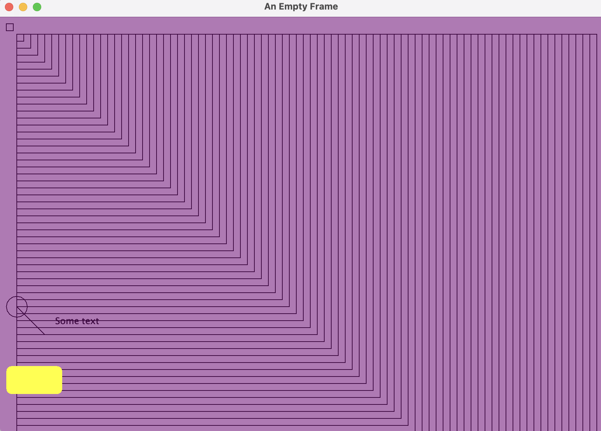

Lab Assignment 11
In this lab, you will practice basic shapes using Java graphics.
⚡ Instructions
- Ungraded work: Complete the demo practice
-
Graded work:
Complete the required tasks in the provided starter zip project and submit your completed
.java+ UML files to Gradescope.
Starter ZIP File
- Download starter zip file: Download Link.
-
This is not a full project. It contains two files:
EmptyFrameViewer.javaandMyComponent.java. -
The files are inside a package folder. Drag or import this folder into your project’s
srcdirectory. - After importing, verify the package name appears correctly at the top of both files.
-
Run
EmptyFrameViewerto launch the window. -
What to submit on Gradescope:
Upload all completed
javafiles and the screenshot output of your drawing. The Gradescope link is available on Moodle. This assignment requires a demo verification for grade.
01. Basic Java Graphics Practice
- Follow along and code: Swing Graphics Introduction.
- You will recreate shapes and transformations demonstrated in class.
- Do not rush ahead. Focus on understanding how each step works.
- We will use this as a foundation before moving to Part 2.
02. Shapes Submission
Graphics with Swing
Use two starter files: Step 1: Run the starter All drawing happens inside Draw a simple square. The square should be positioned at (10, 10) with a width and height of 10 pixels. Draw a series of nested rectangles (squares) that increase in size. They should start at (25, 25) with an initial size of 10, and increase by 10 pixels each time. Draw a circle and two lines starting from the circle's center. One line should be diagonal (from northwest to southeast) and the other horizontal. Your final application should look similar to this screenshot (exact positions/colors may vary slightly):  Display the text "Some text" at a specified location, using a custom font, and then reset the font to the original. Fill the entire component with a semi-transparent background color. Draw a filled rounded rectangle with a yellow color Override the By completing this lab, you'll gain hands-on experience with Java Swing graphics. Follow each instruction carefully and experiment with different values to see how they affect your drawing. Once you have implemented all methods, run your application using the Note: Do not compare your solution with any provided answers until you have attempted the implementation on your own.EmptyFrameViewer.java and MyComponent.java.
Getting Started
EmptyFrameViewer.java.JFrame (e.g., “Lab 10 Drawing”).MyComponent and add it to the frame.Step 2: Add drawing tasks
paintComponent of MyComponent.
For each task, you will complete the provided methods (e.g., drawSimpleSquare). The methods have been alreday called from paintComponent.1. Method:
drawSimpleSquare(Graphics2D g2d)Objective
Steps
Rectangle object using the given coordinates and dimensions.g2d.draw() method to draw the square.Hints
Rectangle class (from java.awt) can be used to represent the square.
// TODO: Implement drawSimpleSquare
private void drawSimpleSquare(Graphics2D g2d) {
// Use constants: sqLocX = 10, sqLocY = 10, sqWidth = 10, sqHeight = 10
// Create a Rectangle and use g2d.draw(rectangle);
}
2. Method:
drawManyRectangles(Graphics2D g2d)Objective
Steps
this.getWidth()). Then subtract the width of rectangle to obtain the limit. This will be the "length" you will use in your for loop for loop starting at 10 and increment the size by 10 until a limit is reachedRectangle at (25, 25) with the current sizeHints
// TODO: Implement drawManyRectangles
private void drawManyRectangles(Graphics2D g2d) {
// Use a loop to create a new rectangle and to increment its size
// Note square is a rectangle with the same height and width
}
3. Method:
drawShapesLines(Graphics2D g2d)Objective
Steps
Ellipse2D.Double to create a circle.
Ellipse2D.Double takes four parameters:
x (left), y (top), width, height.(10, 400, 30, 30) → a circle at position (10,400) with 30 pixels width and height.g2d.draw()🎨 Example Output
Hints
Line2D.Double class to define lines.
CenterX = X + (Width / 2);
CenterY = Y + (Height / 2);
// TODO: Implement drawShapesLines
private void drawShapesLines(Graphics2D g2d) {
// Create an Ellipse2D.Double for the circle and calculate its center
// Define two lines: one diagonal and one horizontal, then draw them
}
4. Method:
drawSomeText(Graphics2D g2d)Objective
Steps
Graphics2D context using g2d.getFont(). Remember Font is a classg2d.setFont()
g2d.setFont(new Font("Times New Roman", Font.PLAIN, 36));g2d.drawString().Hints
Font class to create a new font.
// TODO: Implement drawSomeText
private void drawSomeText(Graphics2D g2d) {
// Save the current font, set a new font, draw the text, then reset the font
}
5. Method:
drawUsingColors(Graphics2D g2d)Objective
Steps
this.getWidth() and this.getHeight().g2d.getColor()
Note: In the constructor call new Color(128, 0, 128, 128), the fourth parameter represents the alpha value, which controls the transparency of the color. The alpha value ranges from 0 (completely transparent) to 255 (completely opaque). Here, an alpha of 128 means the color is approximately 50% transparent,
resulting in a semi-transparent purple Color backgroundColor = new Color(128, 0, 128, 128);
g2d.setColor(backgroundColor);
Rectangle covering the entire component and fill it using g2d.fill()Hints
Color constructor that accepts RGBA values.
// TODO: Implement drawUsingColors
private void drawUsingColors(Graphics2D g2d) {
// Fill the component background with a semi-transparent color and restore the original color
}
6. Method:
drawRoundedRect(Graphics2D g2d)Objective
Steps
RoundRectangle2D.Double with the specified parametersg2d.fill()Hints
RoundRectangle2D.Double class is used for drawing rectangles with rounded corners
// TODO: Implement drawRoundedRect
private void drawRoundedRect(Graphics2D g2d) {
// Create a rounded rectangle and fill it with yellow color, then restore the original color
}
7. Method:
paintComponent(Graphics g)Objective
paintComponent method to combine all your drawing methods and render your custom component.Steps
super.paintComponent(g) to ensure proper rendering.Graphics object to Graphics2D.Hints
// TODO: Implement paintComponent
@Override
protected void paintComponent(Graphics g) {
// Always call super.paintComponent(g) first
// Cast g to Graphics2D and call your drawing methods
}
Conclusion
emptyFrameViewer template to view your custom graphics!